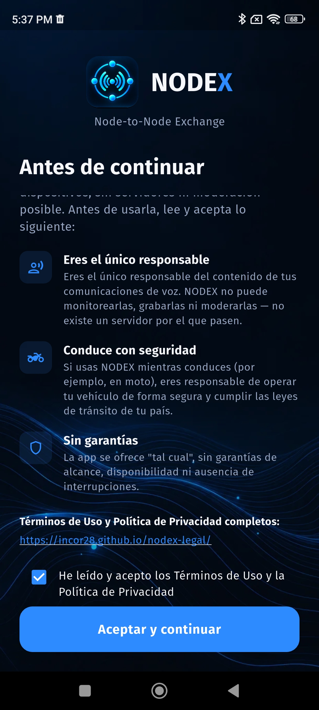
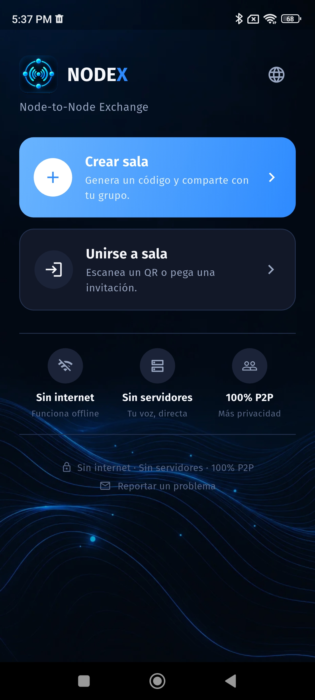
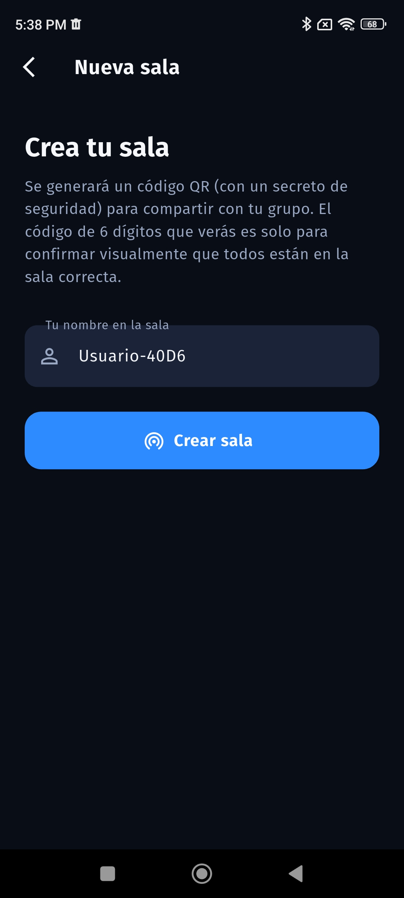
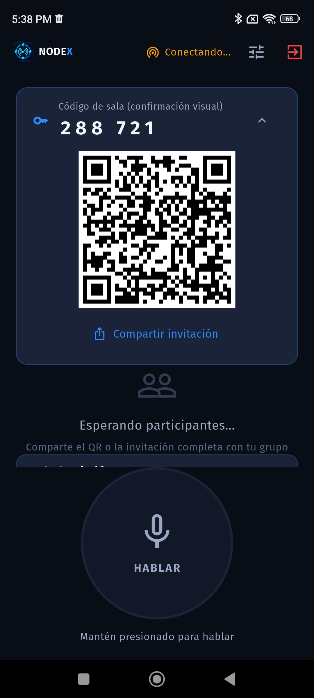
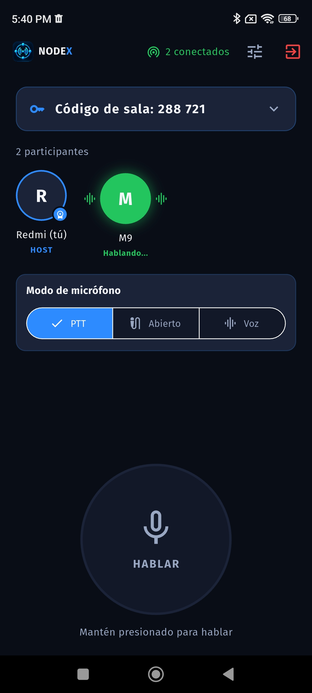
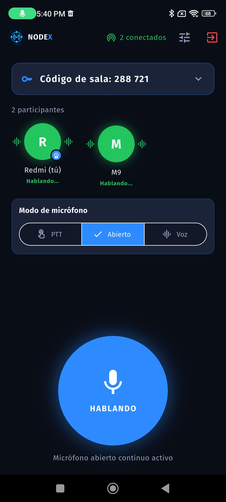
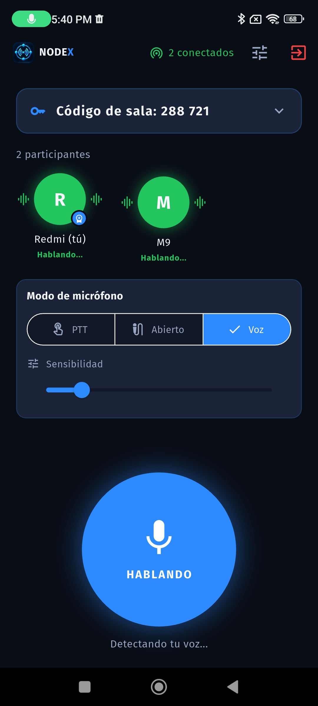
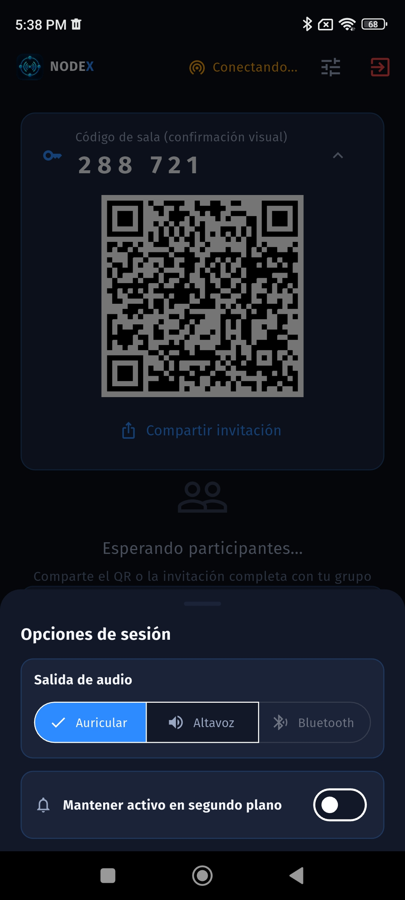
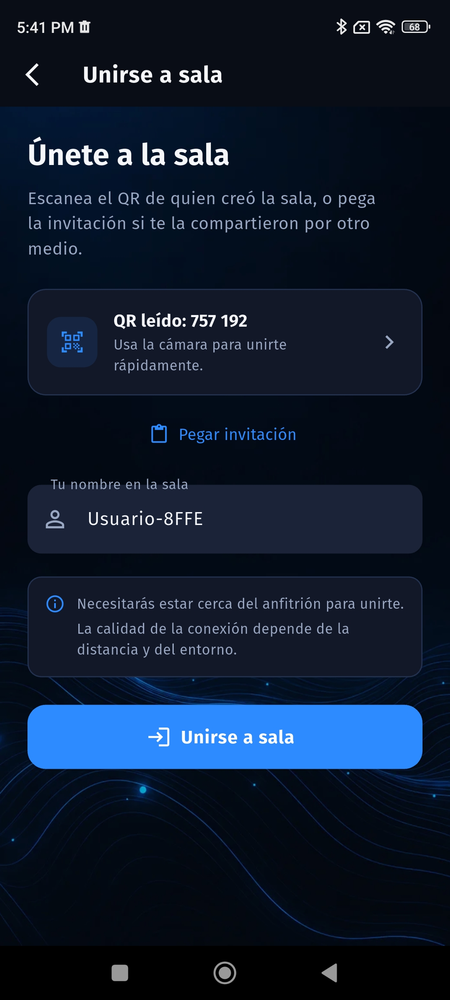
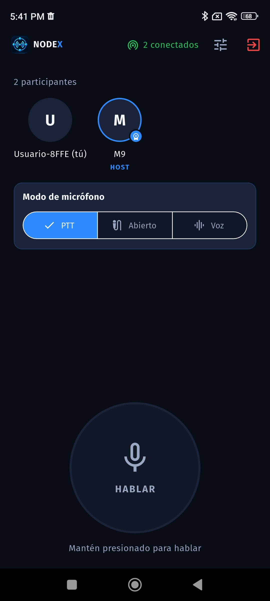

Manual de uso · Beta cerrada
Esto te lleva del primer arranque a tu primera conversación en ocho pasos. NODEX conecta tu voz directo con otro teléfono cercano — sin internet, sin cuentas, sin servidores de por medio.

Al abrir la app por primera vez ves esta pantalla. Como NODEX no tiene servidores ni moderación posible, cada persona es responsable del contenido de sus propias conversaciones de voz.
Lee el resumen, marca la casilla y toca Aceptar y continuar.

Desde aquí salen los dos caminos de NODEX: Crear sala si vas a armar el grupo, o Unirse a sala si alguien ya creó una y te va a sumar.
En este manual seguimos primero el camino de crear una sala; más adelante cubrimos cómo unirse a una ya existente.
Crear salaUnirse a sala

Escribe el nombre con el que te van a ver los demás y toca Crear sala. Tu teléfono pasa a ser el anfitrión — mantén la app abierta mientras el resto se conecta.

Al crear la sala aparece un código QR y un código de 6 dígitos. Ese código de 6 dígitos es solo una confirmación visual de que todos entraron a la sala correcta — no hace falta decirlo en voz alta ni escribirlo en ningún lado.
Toca Compartir invitación para enviarla por WhatsApp, SMS o cualquier app, o deja que la otra persona escanee el QR directo desde tu pantalla.
Con la sala activa, elige el modo de micrófono debajo del código. Los tres son mutuamente excluyentes:

PTT (mantén presionado) Transmite solo mientras sostienes el botón Hablar. Es el modo por defecto y el más predecible.
Abierto El micrófono queda encendido todo el tiempo, sin tocar nada. Cómodo con las manos ocupadas, pero gasta más batería y transmite todo lo que se escuche cerca.
Voz (VOX) Se activa solo al detectar que hablas. Ajusta la sensibilidad si se dispara de más o de menos.
Toca el ícono de ajustes junto al estado de conexión para abrir Opciones de sesión.
Ahí eliges por dónde sale el audio — Auricular, Altavoz o Bluetooth (si tienes un casco o manos libres conectado) — y puedes activar Mantener activo en segundo plano para que la sesión siga funcionando aunque minimices la app. Actívalo con cuidado: consume más batería y Android muestra una notificación fija mientras esté encendido.

Desde Unirse a sala, escanea el QR de quien creó la sala o toca Pegar invitación si te la compartieron por otro medio. Escribe tu nombre y toca Unirse a sala.
Como es conexión directa (Bluetooth + Wi-Fi Direct), necesitas estar físicamente cerca del anfitrión — no funciona a distancia como una llamada normal.

Así se ve la sala para quien se une (no para el anfitrión): el nombre de quien creó la sala aparece marcado con HOST, y cada participante muestra un indicador visual cuando está hablando.
Puedes salir de la sala en cualquier momento con el ícono de salida arriba a la derecha.